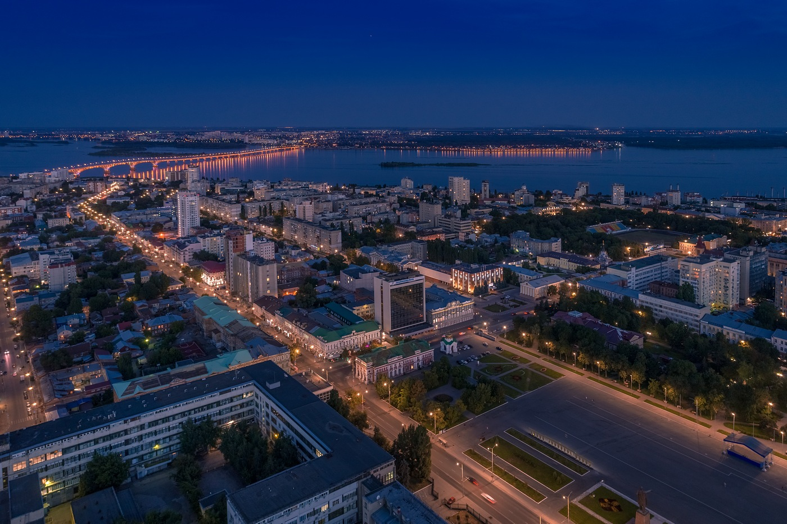
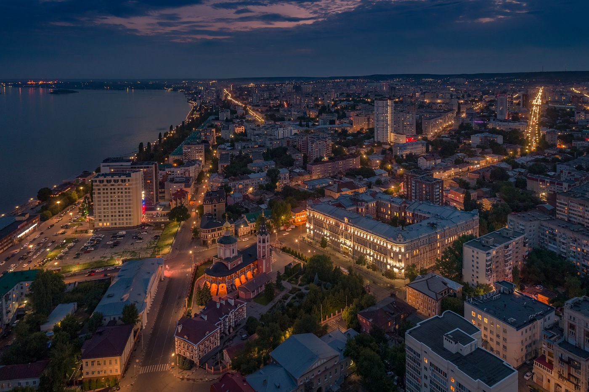

Транспорт
Общественный транспорт, маршруты и остановки
Платформа для сбора и анализа мнений жителей о качестве городской инфраструктуры. Ваш голос помогает увидеть город таким, какой он есть.

Саратов · 51°32′N 46°00′E
Город на Волге
О платформе
Оценка основана на реальном опыте жителей Саратова и помогает определить приоритеты развития городской инфраструктуры.
Общественный транспорт, маршруты и остановки
Состояние дорожного покрытия и тротуаров
Парки, дворы, набережные и общественные пространства
Освещение улиц и ощущение безопасности

Ваше мнение
Опрос займёт около 2 минут. Поставьте оценку от 1 до 5 по каждому направлению.
Методология
Житель оценивает каждое направление: 1 — очень плохо, 5 — отлично. Ответы собираются отдельно по каждому району.
Для каждого направления складываются оценки жителей и делятся на количество ответов по нему: S = сумма оценок / число ответов.
Общий индекс — среднее арифметическое оценок по направлениям для выбранной территории. Показатель рассчитывается по фактическим анкетам, сохранённым в этой версии платформы; демонстрационные значения помечаются отдельно.
Открытая аналитика
на основе 0 реальных ответов